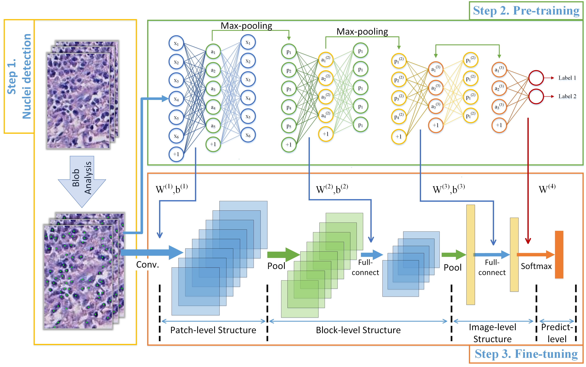
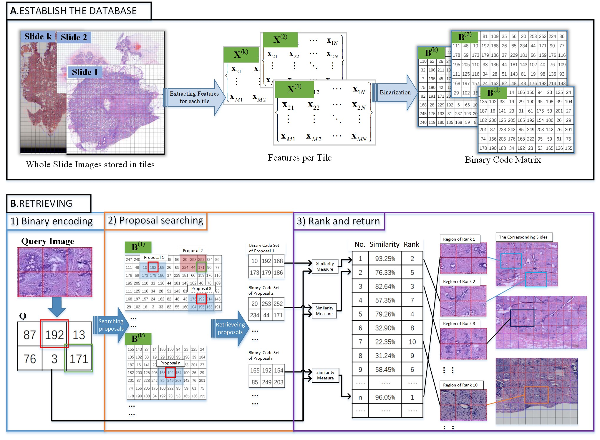
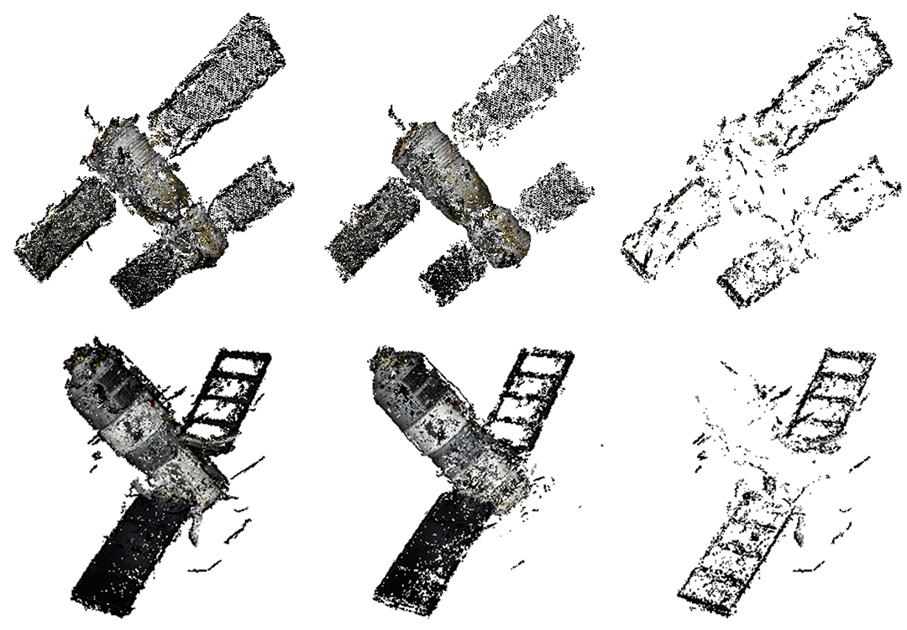

|
Feature extraction from histopathological images based on nucleus-guided convolutional neural network for breast lesion classification
Yushan Zheng, Zhiguo Jiang, Fengying Xie, Haopeng Zhang, Yibing Ma, Huaqiang Shi, and Yu Zhao
Pattern Recognition, 2017
PDF
Abstract
BibTeX
Feature extraction is a crucial and challenging aspect in the computer-aided diagnosis of breast cancer with histopathological images. In recent years, many machine learning methods have been introduced to extract features from histopathological images. In this study, a novel nucleus-guided feature extraction framework based on convolutional neural network is proposed for histopathological images. The nuclei are first detected from images, and then used to train a designed convolutional neural network with three hierarchy structures. Through the trained network, image-level features including the pattern and spatial distribution of the nuclei are extracted. The proposed features are evaluated through the classification experiment on a histopathological image database of breast lesions. The experimental results show that the extracted features effectively represent histopathological images, and the proposed framework achieves a better classification performance for breast lesions than the compared state-of-the-art methods.
@article{zheng2017PR,
author = {Zheng, Yushan and Jiang, Zhiguo and Xie, Fengying and Zhang, Haopeng and Ma, Yibing and Shi, Huaqiang and Zhao, Yu},
title = {Feature extraction from histopathological images based on nucleus-guided convolutional neural network for breast lesion classification},
journal = {Pattern Recognition},
volume = {71},
pages = {14-25},
ISSN = {0031-3203},
DOI = {10.1016/j.patcog.2017.05.010},
year = {2017},
type = {Journal Article}
}
|

|
Size-scalable content-based histopathological image retrieval from database that consists of WSIs
Yushan Zheng, Zhiguo Jiang, Haopeng Zhang, Fengying Xie, Yibing Ma, Huaqiang Shi, and Yu Zhao
IEEE Journal of Biomedical and Health Informatics, 2017
PDF
Abstract
BibTeX
Content-based image retrieval (CBIR) has been widely researched for histopathological images. It is challenging to retrieve contently similar regions from histopathological whole slide images (WSIs) for regions of interest (ROIs) in different size. In this paper, we propose a novel CBIR framework for database that consists of WSIs and size-scalable query ROIs. Each WSI in the database is encoded into a matrix of binary codes. When retrieving, a group of region proposals that have similar size with the query ROI are firstly located in the database through an efficient table-lookup approach. Then, these regions are ranked by a designed multi-binary-code-based similarity measurement. Finally, the top relevant regions and their locations in the WSIs as well as the corresponding diagnostic information are returned to assist pathologists. The effectiveness of the proposed framework is evaluated on a fine-annotated WSI database of epithelial breast tumors. The experimental results have proved that the proposed framework is effective for retrieval from database that consists of WSIs. Specifically, for query ROIs of 4096$\times$4096 pixels, the retrieval precision of the top 20 return has reached 96\% and the retrieval time is less than 1.5 second.
@article{zheng2017JBHI,
author = {Zheng, Yushan and Jiang, Zhiguo and Zhang, Haopeng and Xie, Fengying and Ma, Yibing and Shi, Huaqiang and Zhao, Yu},
title = {Size-scalable content-based histopathological image retrieval from database that consists of WSIs},
journal = {IEEE journal of biomedical and health informatics},
DOI = {10.1109/jbhi.2017.2723014},
year = {2017},
type = {Journal Article}
}
|

|
3D Reconstruction of Space Objects from Multi-Views by a Visible Sensor
Haopeng Zhang, Quanmao wei and Zhiguo Jiang
Sensors, 2017
PDF
Abstract
BibTeX
In this paper, a novel 3D reconstruction framework is proposed to recover the 3D structural model of a space object from its multi-view images captured by a visible sensor. Given an image sequence, this framework first estimates the relative camera poses and recovers the depths of the surface points by the structure from motion (SFM) method, then the patch-based multi-view stereo (PMVS) algorithm is utilized to generate a dense 3D point cloud. To resolve the wrong matches arising from the symmetric structure and repeated textures of space objects, a new strategy is introduced, in which images are added to SFM in imaging order. Meanwhile, a refining process exploiting the structural prior knowledge that most sub-components of artificial space objects are composed of basic geometric shapes is proposed and applied to the recovered point cloud. The proposed reconstruction framework is tested on both simulated image datasets and real image datasets. Experimental results illustrate that the recovered point cloud models of space objects are accurate and have a complete coverage of the surface. Moreover, outliers and points with severe noise are effectively filtered out by the refinement, resulting in an distinct improvement of the structure and visualization of the recovered points.
@article{zhangSensors17,
author = {Haopeng Zhang and Quanmao Wei and Zhiguo Jiang},
title = {3D Reconstruction of Space Objects from Multi-Views by a Visible Sensor},
journal = {Sensors},
volume = {17},
year = {2017},
number = {7},
article number = {1689},
url = {http://www.mdpi.com/1424-8220/17/7/1689},
issn = {1424-8220},
doi = {10.3390/s17071689}
}
|

|
Spacecraft component detection in point clouds
Quanmao wei, Zhiguo Jiang, Haopeng Zhang and Nie Shanlan
IGTA, 2017
PDF
Abstract
BibTeX
Component detection of spacecraft is significant for on-orbit operation and space situational awareness. Solar wings and main body are the major components of most spacecrafts, and can be described by geometric primitives like planes, cuboid or cylinder. Based on this prior, pipeline to automatically detect the basic components of spacecraft in 3D point clouds is presented, in which planes, cuboid and cylinder are successively detected. The planar patches are first detected as possible solar wings in point clouds of the recorded object. As for detection of the main body, inferring a cuboid main body from the detected patches is first attempted, and a further attempt to extract a cylinder main body is made if no cuboid exists. Dimensions are estimated for each component. Experiments on satellite point cloud data that are recovered by image-based reconstruction demonstrated effectiveness and accuracy of this pipeline.
@inproceedings{weiIGTA17,
author = {Quanmao Wei and Zhiguo Jiang and Haopeng Zhang and Shanlan Nie},
editor = {Yongtian Wang and Shengjin Wang and Yue Liu and Jian Yang
and Xiaoru Yuan and Ran He and Henry Been-Lirn Duh},
title = {Spacecraft Component Detection in Point Clouds},
booktitle = {Advances in Image and Graphics Technologies},
year = {2017},
publisher = {Springer Singapore},
address = {Singapore},
pages = {210--218},
isbn = {978-981-10-7389-2}
}
|